Ce qui vaut vraiment la peine d’être acheté
Des guides détaillés sur le matériel qui en vaut la peine : nos choix, pourquoi, et le compromis que vous acceptez à chaque fois.

A 3D Printing Starter Kit That Skips the Frustrating First Month
Ten things that turn a new printer into finished parts, ranked by how many failed prints each one saves you.
Maison
57 Home
HomeAging-in-Place Products That Preserve Independence
Small changes that make daily routines safer. Ten carefully chosen buys, with the limits and trade-offs stated plainly.
 Home
HomeBuying Used Furniture Without Bringing Home Trouble
Know what to inspect and what to leave behind. Ten carefully chosen buys, with the limits and trade-offs stated plainly.
 Home
HomeA Practical Home Emergency Kit
Prepare for the boring emergencies first. Ten carefully chosen buys, with the limits and trade-offs stated plainly.
 Home
HomeHouseplants That Survive Real Homes, and the Kit That Keeps Them Alive
Ten things ranked by how much they raise a plant's odds of making it through its first year indoors. Most plants die of kindness, not neglect.
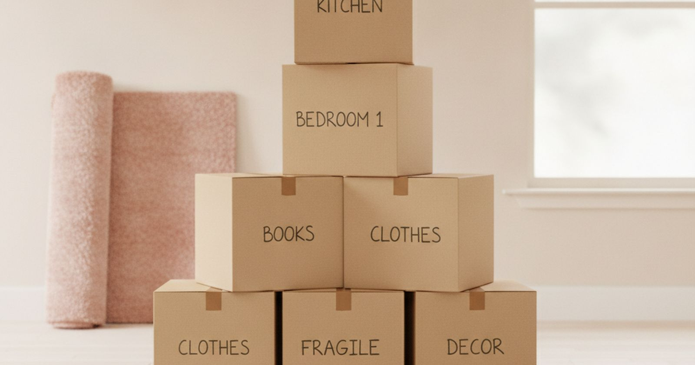
HomeMoving House Without the Broken Boxes and Lost Screws
Ten things that make moving day less painful, ranked by what they save you when the van is half loaded and it starts to rain.
 Home
HomeHumane Pest Control That Works Without Poisoning the House
Ten ways to deal with mice, ants, flies and moths, ranked by how well they work in a home with children and pets. Sealing gaps beats every gadget.
Small-Apartment Upgrades That Earn Their Space
Make every square foot work harder. Ten carefully chosen buys, with the limits and trade-offs stated plainly.
 Cuisine
CuisineLes ustensiles de cuisine qui survivent au tri des tiroirs
Toutes les cuisines ont un tiroir rempli de gadgets utilisés deux fois. Voici ceux qui sont encore à portée de main cinq ans plus tard.
 Beauté
BeautéAppareils de beauté : ceux qui servent à quelque chose et ceux qui ne servent à rien
Un regard sceptique sur les appareils à domicile que tout le monde s'arrache : ce que la science confirme, ce qu'elle infirme, et ce qu'une simple serviette fait gratuitement.
 Mode
ModeLes accessoires qui rehaussent n'importe quelle tenue
Dix pièces pour sublimer une tenue ordinaire, choisies pour leur durabilité plutôt que pour leur côté tendance.
 Saisonnier
SaisonnierFournitures d'emballage et d'expédition qui fonctionnent vraiment
Évitez la cohue annuelle des cadeaux avec des outils et des matériaux qui simplifient le processus, du papier à l'affranchissement en passant par le rangement d'une année sur l'autre.
 Cadeaux
CadeauxDes ustensiles de cuisine qui améliorent la cuisine, pas seulement qui la permettent
Pour le chef amateur qui a l'essentiel, ces outils offrent des améliorations réfléchies ou des fonctions spécialisées.
 Cadeaux
CadeauxCadeaux qui remplacent le vieux, pas juste qui encombrent
Trouver des cadeaux pour ceux qui prétendent ne rien vouloir, c'est chercher ce qu'ils utilisent au quotidien et le remplacer par mieux.
 Cadeaux
CadeauxCadeaux pour ados qui évitent les erreurs coûteuses
Choisir des cadeaux pour les adolescents est difficile. Ce guide se concentre sur des articles pratiques qui durent, en évitant les modes éphémères et les faux pas coûteux.
 Cadeaux
CadeauxCadeaux de voyage qui justifient leur place
Trouver des cadeaux utiles pour les grands voyageurs demande un œil critique. De nombreux gadgets sont plus une nuisance qu'autre chose. Voici ceux qui tiennent leurs promesses.
 Cadeaux
CadeauxCadeaux à moins de 25 $ qui sont vraiment utiles
Trouver un bon cadeau à moins de 25 $ est difficile ; la plupart des listes sont remplies d'articles fantaisie. Voici des choses que les gens utilisent réellement et remplacent lorsqu'elles sont usées.
 Cadeaux
CadeauxCadeaux durables qui sortent du lot
Trouvez des cadeaux réfléchis dans la gamme de prix de 25 à 50 $ qui offrent une utilité et une durabilité réelles, en évitant les gadgets éphémères et les articles fantaisie.
 Saisonnier
SaisonnierLes ustensiles de pâtisserie qui rendent les efforts saisonniers moins pénibles
La pâtisserie saisonnière présente des défis spécifiques ; ce guide vous aide à choisir des outils qui simplifient réellement le processus, sans simplement ajouter de l'encombrement.
 Saisonnier
SaisonnierLa préparation des fêtes à la maison, pour éviter les pièges à invités
Recevoir pendant les fêtes implique de gérer plus de monde et plus d'affaires. Achetez le bon matériel pour que tout le monde soit à l'aise, sans vous ruiner.
 Saisonnier
SaisonnierGuirlandes lumineuses de saison qui durent plus d'une fête
Choisir des guirlandes lumineuses de saison implique de trouver un équilibre entre l'attrait esthétique, le côté pratique, la durabilité et un budget réaliste pour une utilisation temporaire.
 Nouvel An
Nouvel AnÉquipement de fitness à domicile qui mérite son petit espace
Commencez votre routine de remise en forme à domicile en janvier sans vous ruiner ni encombrer votre petit espace de vie.
 Nouvel An
Nouvel AnSoldes du Nouvel An : ce qui baisse vraiment de prix et ce qui ne fait que le paraître
Après les fêtes, certains articles voient leur prix baisser réellement. Beaucoup d'autres ne font que changer l'étiquette de leur ancien prix.
 Nouvel An
Nouvel AnDes produits d'organisation qui règlent des problèmes, pas seulement qui contiennent des choses
N'achetez pas juste plus de contenants. Ce guide vous aide à identifier les quelques produits d'organisation qui simplifient réellement votre maison et survivent au-delà du rangement de janvier.
 Saisonnier
SaisonnierMatériel de réception pour le Nouvel An qui fonctionne vraiment
Préparer une fête du Nouvel An nécessite du matériel pratique pour les boissons, la musique, l'éclairage et un plan réaliste pour le nettoyage après.
 Cadeaux
CadeauxCadeaux Secret Santa : des objets utiles que les gens gardent vraiment
Organiser un échange de cadeaux au bureau, c'est choisir des articles pratiques et appréciés par tous, qui ne dépendent pas des goûts personnels et respectent un budget commun.
 Cadeaux
CadeauxPetits cadeaux qui servent, pas juste qui s'entassent
Trouver de petits cadeaux utiles qui ne finiront pas par encombrer est plus difficile qu'il n'y paraît, mais certains articles offrent constamment une utilité sans être du gaspillage.
 Saisonnier
SaisonnierPréparation de votre voiture pour la conduite hivernale, pas juste pour le gel léger
Équiper votre voiture pour l'hiver, c'est plus que dégager le pare-brise. Soyez prêt pour les pannes et les conditions difficiles, pas juste pour une légère couche de neige.
 Saisonnier
SaisonnierÉquipement pour animaux de compagnie par temps froid : pour une utilisation réelle
Protéger votre chien ou votre chat par temps froid va au-delà d'un simple pull. Concentrez-vous sur les soins des pattes, la chaleur et la stimulation mentale.
 Saisonnier
SaisonnierProtection Saisonnière Pour la Peau Qui Fait Vraiment la Différence
Le froid, le vent et l'air sec intérieur exigent un changement dans votre routine, mais tous les produits ne font pas une réelle différence.
 Saisonnier
SaisonnierRester au chaud chez soi sans chauffer toute la maison
Restez au chaud et économisez de l'argent en ciblant la chaleur là où vous en avez besoin, plutôt que d'augmenter le thermostat pour toute la maison.
 Qualité de l'air
Qualité de l'airPurificateurs d'air, humidificateurs et les chiffres qui comptent vraiment
De nombreux appareils prétendent purifier l'air, mais peu aident réellement contre les polluants intérieurs courants. Comprendre les chiffres permet de distinguer l'utile du superflu.
 Bébé
BébéKit bébé pour les deux premières années, sans la panique
Ce guide se concentre sur les articles de puériculture pratiques et durables, en distinguant les outils utiles des gadgets éphémères.
 Salle de bain
Salle de bainRénovations de salle de bain qu'un propriétaire ne peut pas refuser
Améliorations et réparations pratiques pour la salle de bain, destinées aux locataires et aux propriétaires, privilégiant l'utilité aux tendances.
 Nettoyage
NettoyageKit de nettoyage qui surpasse les gadgets du rayon
De nombreux gadgets de nettoyage sont une perte d'argent. Voici ce qui aide réellement à maintenir une maison propre sans dépenser plus en battage médiatique.
 Cyclisme
CyclismeTraverser un hiver rigoureux à vélo
Équipez votre vélo pour les trajets quotidiens, du antivol à la protection contre la pluie, en évitant les achats superflus.
 Soins capillaires
Soins capillairesChaleur, cheveux et les dommages que vous pouvez réellement éviter
De nombreux produits de soins capillaires promettent trop. Nous démêlons le bruit pour identifier les outils et les protections qui valent la peine d'être considérés, et ce qu'il faut laisser de côté.
 Buanderie
BuanderieLe matériel de buanderie qui prolonge la vie de vos vêtements
Pour que les vêtements durent plus longtemps, il ne suffit pas de les laver ; il faut faire des choix réfléchis pour les sécher, les traiter et les ranger.
 Éclairage
ÉclairageComment faire pour que votre chambre louée ne ressemble plus à un bureau
Un bon éclairage transforme un espace plus que la peinture. Nous avons trouvé des lampes et des ampoules qui font le travail, sans donner à votre pièce l'impression d'une salle d'attente stérile.
 Sécurité domestique
Sécurité domestiqueSécurité domestique sans céder votre salon
Comprendre ce qu'offre la sécurité domestique de base, ses limites réelles et les coûts en matière de vie privée.
 Soins de la peau
Soins de la peauLes quatre ingrédients qui ont fait leurs preuves, et les appareils qui n'en ont pas
La plupart des produits de soins de la peau sont des lotions coûteuses qui font très peu. Voici les ingrédients et les routines simples qui font réellement une différence.
 Sommeil
SommeilCe qui aide vraiment à dormir, et ce qui ne fait que le mesurer
Mieux dormir, c'est une question d'environnement et d'habitudes, pas de gadgets coûteux. Voici ce qui fonctionne, et ce qu'il faut ignorer.
 Outils de bricolage
Outils de bricolageLa boîte à outils qui gère neuf tâches ménagères sur dix
Un petit ensemble d'outils fiables suffit pour la plupart des tâches ménagères ; évitez les gadgets inutiles tant que vous n'en avez pas vraiment besoin.
 Électronique
ÉlectroniqueDix gadgets qui méritent leur place sur votre bureau
Pas les lancements les plus tape-à-l'œil de l'année, mais ceux que les gens utilisent encore six mois après que la nouveauté se soit estompée.
 Maison connectée
Maison connectéeLes appareils de domotique qui valent vraiment la peine d'être installés
La plupart des appareils de domotique résolvent des problèmes que vous n'aviez pas. Ces dix-là en résolvent de vrais — et nous vous disons clairement lesquels nous laisserions de côté.
 Café
CaféS'équiper pour le café à la maison : les achats à faire, du premier au dernier
Dix accessoires qui changent vraiment le goût de votre café, classés selon leur impact par euro dépensé.
 Télétravail
TélétravailAméliorer le bureau où vous passez quarante heures par semaine
Investissez dans les éléments en contact direct avec votre corps. Tout le reste sur cette page est facultatif, et nous vous aidons à faire le tri.
 Voyage
VoyageÉquipement de voyage qui justifie son poids
Chaque objet dans un sac a un coût. Ces dix-là le justifient — et nous citons les articles populaires qui n'en valent pas la peine.
 Animaux de compagnie
Animaux de compagnieLes accessoires pour animaux qui valent la peine, et ceux qui ne font qu'encombrer l'entrée
Dix articles qui améliorent la vie de l'animal, et pas seulement pour faire de belles photos. Classés en fonction de leur impact réel.
 Photographie
PhotographieLes accessoires photo qui améliorent vos images, pas seulement votre sac
La lumière et la stabilité transforment les images. Le reste de l'équipement ne fait souvent que changer le look de votre matériel. Voici comment faire le tri, en toute honnêteté.
 Plein air
Plein airMatériel de camping : celui qui fonctionne par mauvais temps, pas seulement en photo
Dix articles classés en fonction de ce qui se passe lorsque la nuit est plus froide ou plus humide que prévu.
 Téléphone
TéléphoneLes accessoires pour téléphone que vous utiliserez encore dans un an
Dix accessoires qui résistent à un usage quotidien, et ceux, pourtant populaires, que nous ne rachèterions pas.
 Enfants
EnfantsLes affaires pour enfants qui survivent au contact de vrais enfants
Dix achats que les parents continuent de recommander des années plus tard, et ceux, plus populaires, qui finissent au grenier dès le mois de mars.
 Santé
SantéGadgets santé : lesquels mesurent vraiment quelque chose ?
Un regard sceptique sur les appareils de santé à domicile : lesquels fournissent des chiffres exploitables, et lesquels ne font que paraître précis.
 Organisation de la maison
Organisation de la maisonDes solutions de rangement qui règlent le problème au lieu de le cacher
Dix articles qui créent vraiment de l'espace, et un avis honnête sur ceux qui ne font que rendre le désordre plus présentable.
 Voiture
VoitureLes accessoires auto qui méritent une place dans votre coffre
Dix accessoires classés selon leur utilité les mauvais jours, pas les bons.
 Jardin
JardinMatériel pour jardin et balcon : ce qui mérite vraiment sa place
Dix articles qui fonctionnent aussi bien sur un balcon qu'au jardin, classés selon leur impact réel sur vos plantations.
 Rentrée scolaire
Rentrée scolaireFournitures de rentrée : le kit qui dure après la Toussaint
Notre sélection de dix articles qui survivront à une année entière dans un cartable, et ceux pour lesquels il est plus malin de ne rien dépenser.
Cadeaux
5 Gifts
GiftsGifts for Book Lovers Beyond Another Book
Make reading more comfortable without guessing their taste. Ten carefully chosen buys, with the limits and trade-offs stated plainly.
 Gifts
GiftsGifts for New Homeowners That Will Get Used
Useful upgrades for the first year. Ten carefully chosen buys, with the limits and trade-offs stated plainly.
 Gifts
GiftsGifts for People Who Say They Want Nothing
Ten gifts for the person who insists they need nothing, ranked by how likely each one is to get used rather than stored.
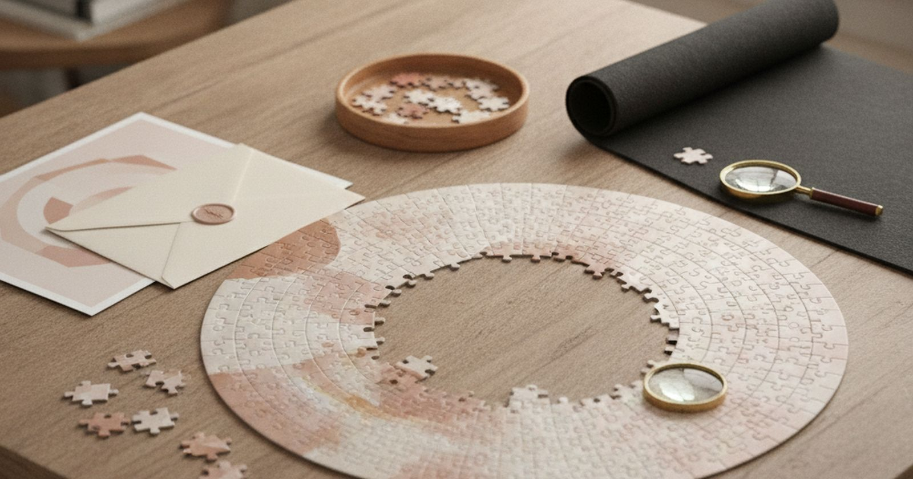
GiftsGifts for Puzzle Lovers That Are Actually a Challenge
Ten gifts for people who love puzzles, ranked by how much play and satisfaction each one gives. Richness beats difficulty.
Gifts for People Who Work From Home
Improve the workday without adding desk clutter. Ten carefully chosen buys, with the limits and trade-offs stated plainly.
De saison
2Halloween Costumes and Decorations That Last Past One Night
Ten Halloween buys ranked by how many Octobers they will see. Skip the one-night plastic and spend on the pieces that come out every year.
Holiday Returns and Clearance: How to Buy the Right Deal
Separate a real discount from unwanted inventory. Ten carefully chosen buys, with the limits and trade-offs stated plainly.
Cuisine
9 Kitchen
KitchenBaking Tools Beginners Should Buy First
Ten basics before decorative gadgets. Ten carefully chosen buys, with the limits and trade-offs stated plainly.
 Kitchen
KitchenFermentation at Home: Kimchi, Sauerkraut and Kombucha Without the Mould
Ten things for fermenting vegetables and drinks at home, ranked by how many failed batches each one prevents. Keeping everything under the brine is most of the job.
 Kitchen
KitchenA Home Bar Setup That Makes Good Drinks Without a Bartender's Budget
Ten home bar tools ranked by how much better the drink in your glass gets. Measuring matters more than any fancy gadget.
 Kitchen
KitchenIce Cream at Home, From No-Churn to Proper Gelato
Ten things for homemade ice cream, ranked by how much smoother and easier it gets. Cold matters more than anything.
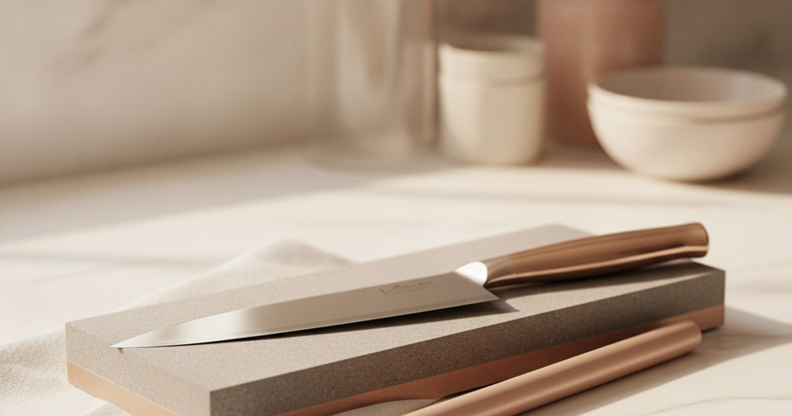
KitchenKnife Sharpening and Care, So Your Knives Stay Sharp for Years
Ten ways to keep kitchen knives sharp, ranked by what they do for the edge. The cutting board matters nearly as much as the sharpener.
Meal-Prep Tools That Save Time All Week
Spend less time cooking, not more time cleaning gadgets. Ten carefully chosen buys, with the limits and trade-offs stated plainly.
Pizza at Home That Tastes Like a Pizzeria Made It
Ten things for better homemade pizza, ranked by what they do for the crust. Heat is everything, and you can get most of it from a normal oven.
Tea Gear That Improves the Cup, Not the Countertop
Control water, leaf and time. Ten carefully chosen buys, with the limits and trade-offs stated plainly.
 Grilling
GrillingUstensiles de barbecue qui durent plus d'un été
Une bonne cuisson au barbecue repose sur des outils fiables et une compréhension claire du fonctionnement de la chaleur, pas sur du marketing ou des gadgets inutiles.
Tech
10 Tech
TechBacking Up Photos and Files Before You Need To
Ten pieces of a backup plan, ranked by how much they protect you when a phone is stolen or a laptop dies. None of it is complicated.
 Tech
TechBeginner Drones That Fly Well and Keep You Legal
Ten things for a first drone, ranked by what improves your footage and keeps you on the right side of the rules.
 Tech
TechCord-Cutting Gear: What You Need and What You Do Not
Replace the cable box without rebuilding the living room. Ten carefully chosen buys, with the limits and trade-offs stated plainly.
 Tech
TechE-Readers and the Few Accessories That Make Them Better
Ten things that make you read more, ranked by how much each one changes the habit rather than how good it looks in a box.
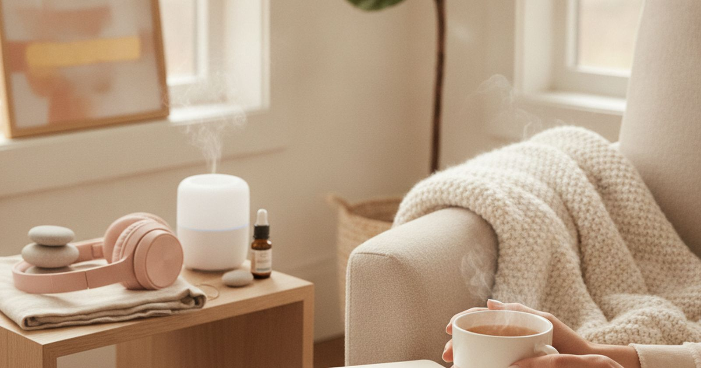
Home officeErgonomic Desk Upgrades Before You Buy a New Chair
Fix the setup before blaming the furniture. Ten carefully chosen buys, with the limits and trade-offs stated plainly.
 Tech
TechFixing Home Wi-Fi Dead Zones Without Paying for More Speed
Ten fixes for slow rooms and dropped calls, ranked by how much each one helps for the money. The first two cost nothing.
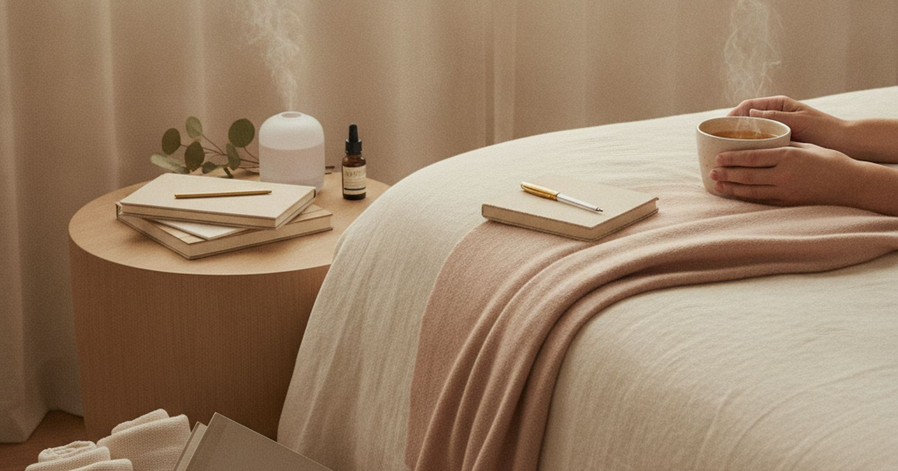
TechRefurbished Tech That Is Actually Worth Buying
Save money without inheriting someone else’s problem. Ten carefully chosen buys, with the limits and trade-offs stated plainly.
Looking and Sounding Better on Video Calls
Ten upgrades ranked by how much better you come across on a call. Sound matters most, and the camera matters least.
 Audio
AudioCasques, écouteurs et la caractéristique qui compte vraiment
Acheter du matériel audio implique de trier beaucoup de marketing. Voici ce qui offre une qualité sonore et une utilité sans fonctionnalités superflues.
 Gaming
GamingLes améliorations gaming qui changent vraiment la sensation de jeu
Classées selon la différence que vous remarquerez vraiment, et non selon leur prix.
Santé
6 Health
HealthLow-Vision Home Aids That Are Genuinely Useful
Improve contrast, lighting and legibility. Ten carefully chosen buys, with the limits and trade-offs stated plainly.
 Health
HealthOral Care Upgrades Your Dentist Would Actually Approve Of
Ten oral care picks ranked by how much they protect teeth and gums. Technique and fluoride beat any premium gadget.
 Fitness
FitnessRecovery Tools That Help Sore Muscles, and the Ones That Mostly Feel Nice
Ten recovery tools ranked by how much they actually help sore muscles for the money. Sleep and protein still beat every gadget.
 Fitness
FitnessYoga and Pilates at Home, With Kit That Supports the Practice
Ten things for practising yoga and Pilates at home, ranked by how much they help your form and comfort. A good mat matters most; the rest is small and cheap.
 Running
RunningÉquipement de course pour ceux qui courent sous la pluie
Équipez-vous pour la course en extérieur avec des articles durables, performants et qui justifient leur coût.
 Fitness
FitnessL'équipement de sport à domicile pour ceux qui vont vraiment s'en servir
Un classement basé sur la probabilité que vous utilisiez encore chaque équipement l'an prochain, et non sur son esthétique dans le garage.
Beauté
3 Fashion
FashionSewing and Clothing-Repair Tools for Absolute Beginners
Repair buttons, hems and small tears at home. Ten carefully chosen buys, with the limits and trade-offs stated plainly.
 Beauty
BeautyMen's Grooming Kit That Does the Job Without a Shelf of Products
Ten grooming picks ranked by how much difference each one makes to how you look and feel day to day. A good trimmer and sunscreen beat a shelf of products.
 Beauty
BeautyNail Care at Home That Looks Salon-Fresh for Longer
Ten nail care picks ranked by how much longer a home manicure looks good. Prep and top coat matter more than the colour.
Famille
12HobbiesA 3D Printing Starter Kit That Skips the Frustrating First Month
Ten things that turn a new printer into finished parts, ranked by how many failed prints each one saves you.
 Pets
PetsA First Aquarium That Stays Clear and Keeps Fish Alive
Ten things for a first freshwater aquarium, ranked by how much they keep fish alive through the tricky first months. Bigger tanks are easier, not harder.
 Kids
KidsBackyard Play Equipment That Gets Kids Outside and Keeps Them There
Ten backyard play picks ranked by how much outdoor time they actually create. Simple, open-ended equipment beats big plastic playsets.
 Hobbies
HobbiesBoard Game Night Gear That Gets People Back to the Table
Ten board game night picks ranked by how often they actually get played with mixed groups, not how highly they rank with enthusiasts.
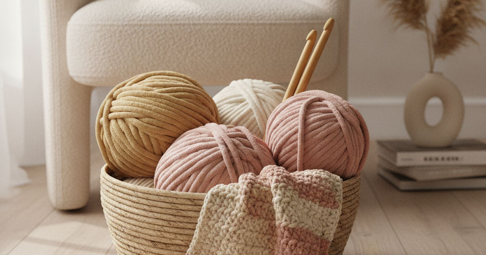
HobbiesCrochet and Knitting Starter Kits That Keep You Past the First Project
Ten things for learning to crochet or knit, ranked by how much easier they make the first few projects. The yarn matters more than the gadgets.
Dog Walking and Training Gear That Makes Every Walk Easier
Ten things for walking and training a dog, ranked by how much they help with pulling, recall and manners. Treats and timing beat gadgets.
Drawing Tablets for Beginners: What to Buy for Digital Art
Ten things for getting started with digital art, ranked by value for someone still learning. A cheap pen tablet is a better start than most people expect.
 Pets
PetsIndoor Cat Gear That Keeps Them Busy, Healthy and Off the Counter
Ten things for indoor cats, ranked by how much they help with boredom, weight and scratched sofas. Most cat problems are boredom problems.
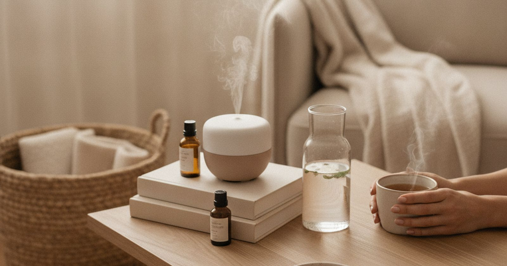
PetsPet Travel Gear for Safer Car Journeys
Restrain, hydrate and clean up properly. Ten carefully chosen buys, with the limits and trade-offs stated plainly.
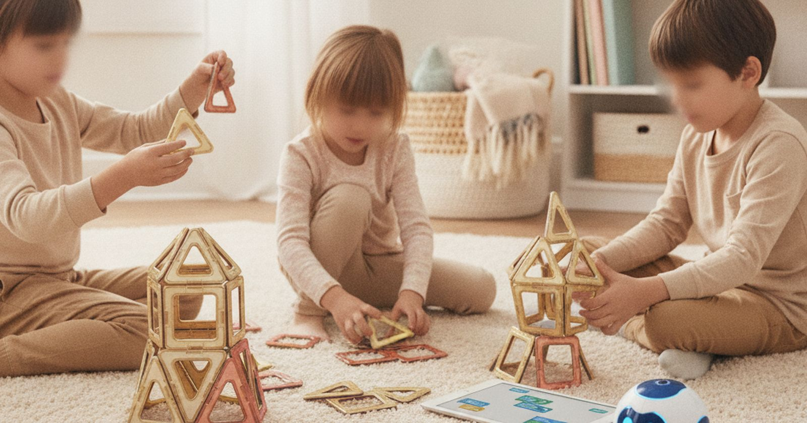
KidsSTEM Toys That Kids Keep Playing With After the First Day
Ten STEM toys ranked by how long kids keep playing with them, not how educational the box claims they are.
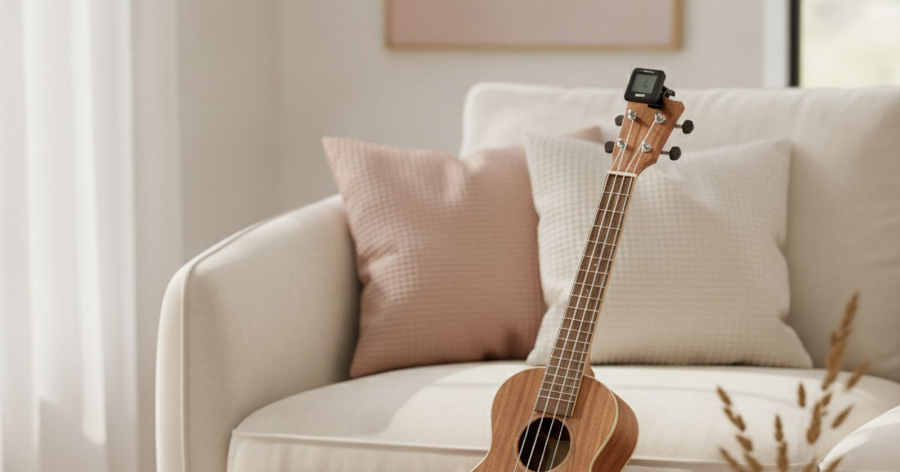
HobbiesA Beginner Ukulele Kit That Stays in Tune and Keeps You Playing
Ten things for learning the ukulele, ranked by how much they help you keep practising past the first month. A playable instrument beats a cheap one every time.
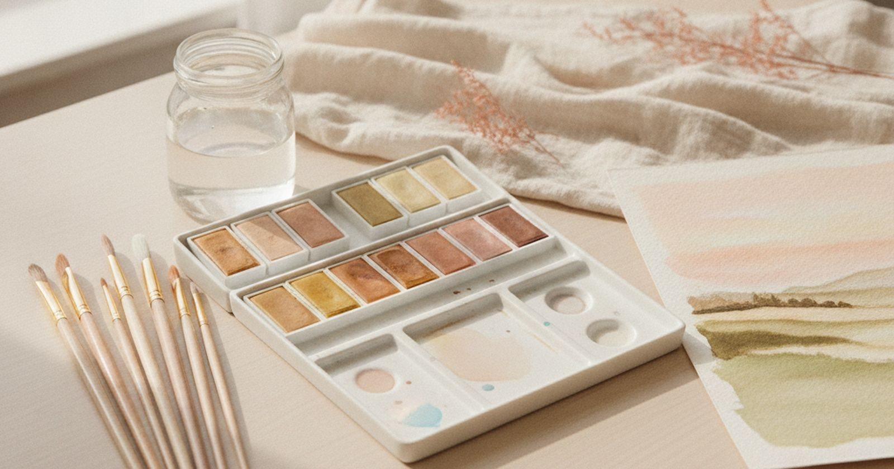
HobbiesWatercolour Supplies for Beginners, Without the Muddy Paintings
Ten watercolour supplies ranked by how much better your paintings get. Spend on paper first; it matters more than paint.
Plein air
11 Outdoor
OutdoorA Beach Day Kit That Keeps the Sand, Sun and Wind in Check
Ten beach buys ranked by how much they improve the day. Shade and water come first, and the gadgets come last.
 Outdoor
OutdoorBeginner Birdwatching Gear Without the Expensive Detour
See more birds without buying expert equipment. Ten carefully chosen buys, with the limits and trade-offs stated plainly.
 Outdoor
OutdoorCamping Kitchen Gear for People Who Actually Cook
Build one compact kitchen that works at a campsite. Ten carefully chosen buys, with the limits and trade-offs stated plainly.
 Car
CarCar Detailing at Home Without Scratching the Paint
Ten car detailing picks ranked by how much they protect the paint and how good the car looks afterwards. Most swirl marks come from washing, not driving.
Cruise Packing Essentials Nobody Tells You About
Ten cruise packing picks ranked by how much easier they make life in a small cabin. Check your cruise line's rules before packing anything electrical.
Day Hiking Kit That Gets You Home Comfortable, Not Just Home
Ten things for day hikes, ranked by what they do for you when the trail runs longer, hotter or wetter than the map suggested.
A Fishing Starter Kit That Catches Fish Instead of Tangles
Ten things for a first season of freshwater fishing, ranked by how much each one helps a beginner catch fish rather than untangle line.
Long-Haul Flight Comfort Kit That Gets You Off the Plane Human
Ten things for long-haul flights, ranked by how much better you feel when you land. Sleep and hydration beat gadgets.
Kayak and Paddleboard Gear for Your First Season on the Water
Ten things for kayaking and paddleboarding, ranked by how much safer and easier they make your first season. The life jacket beats everything.
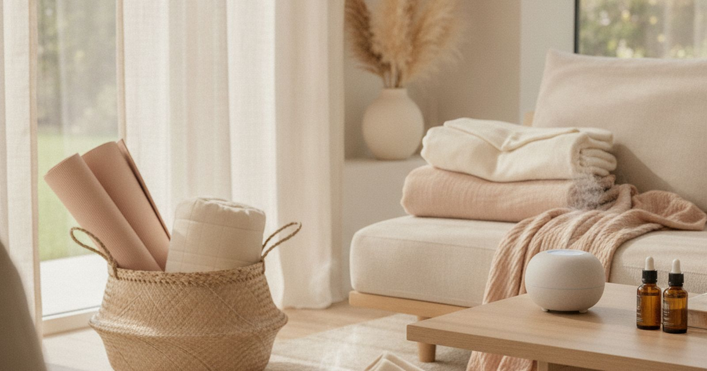
TravelRoad-Trip Gear That Solves Real Problems
Pack for delays, spills and dead batteries. Ten carefully chosen buys, with the limits and trade-offs stated plainly.
 Outdoor
OutdoorStargazing for Beginners: What to Buy Before a Telescope
Ten things for getting into astronomy, ranked by how much more of the night sky they show you. The telescope is not first.
En tant que affilié AliExpress, nous percevons une commission sur les achats éligibles.